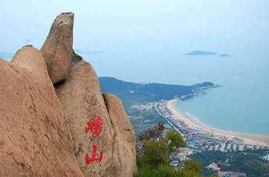

发布者 青岛旅行 2017-10-08 15:43:29
崂山景区包括太清宫、太平宫、北九水、华楼宫、鹤山和崂顶巨峰等景区与景点。奇峰怪石，满山遍布，如狮子峰、绵羊石等。人称峻山的石峰是“天然的花岗岩群雕”。由于临海，山色海波相映，形成了紫霞云海乃至“海市蜃楼”的奇特景象。再加上闻名天下的崂山泉水，如“金液”、“靛缸湾”等，构成了崂山独具一格的自然景观，如《齐记》所云：“泰山虽云高，不如东海崂。” 崂山自古被称为“神宅仙窟”、“海上仙山第一”。秦皇汉武都曾来此求仙。宋元以来，宫观次第兴建，最盛时达“九宫八观七十二庵”。今尚存太清宫、太平宫、华楼宫等。这些建筑多为石壁瓦舍，简朴无华，具有道家冲和恬淡的色彩。其中太清宫中的汉柏唐榆至今仍蓊郁葱青。历代名道如邱处机、张三丰，文人李白、苏轼、蒲松龄等都曾来山中-或漫游，多有题刻吟咏，为奇丽的山水增添了几分文秀。
崂山是道教名山。自春秋战国至秦汉时期，就有方士、巫师在崂山餐霞修炼，唐、宋两代崂山道教肇兴，元、明两代达到鼎盛，至清代不衰。